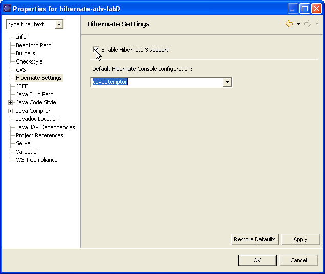
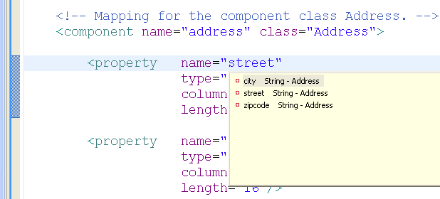
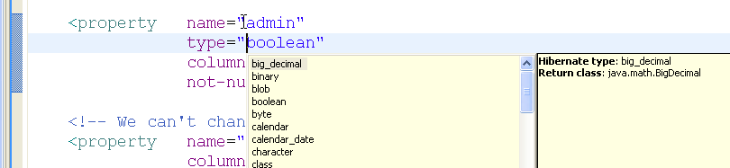
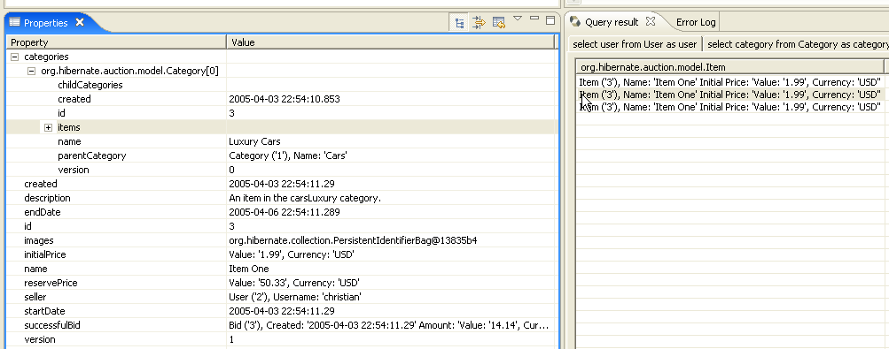
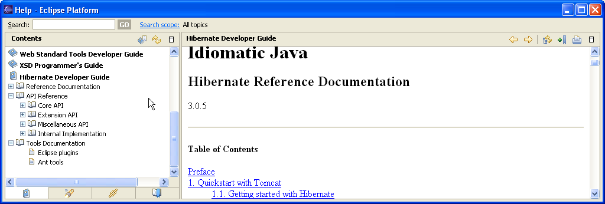

General
Official development Update site
Previously we only had an update site on the sf.net site, but it was very unstable (apparently too high a load) and thus never really offically promoted. Now we have http://downloads.jboss.com/jbosside/updates/development which will be used as an update site for any new development.
This update site also contains other JBoss Eclipse IDE plugins, currently: jBPM, AOP, EJB3 and the JBossIDE.
Project specific Hibernate 3 settings
We have added a "Hibernate Settings" project setting. When enabled and a proper Console configuration is selected the plugins can utilize it to provide more advanced support (like providing better defaults and completion on elements from the database).
Note: the basic completions, including class, property and field names does not require enabling Hibernate 3 settings. They will work on any eclipse java project.

Editors
Based on WTP
From this release we base the XML and DTD handling on the Eclipse Web Tools project(WTP). Download and updatesite contains all the required parts of WTP, thus not necessary to download the complete WTP project to use the plugins.
Code completion on hibernate.cfg.xml property names
When editing hibernate.cfg.xml files, code completion now works on property names (both the short name and those prefixed with hibernate.)

Improved Code completion on .hbm.xml property names
Added more complete code completion for field or property name. Should now work everywhere hibernate expects a property name. It uses the nearest class for the completion as shown here for a component.

Code completion for hibernate types and usertypes
Elements with a type now has code completion support for all the built-in hibernate types and users own UserType's and CompositeUserType's.


Provide cached DTD's
The plugins provide cached DTD's to the WTP XML Catalog. This allow code completion to work without network access. To utilize it ensure you use the proper PUBLIC id's for your hibernate related xml files.

Table name completion
If "Hibernate Settings" project setting is enabled the plugin will be able to code complete on table names. Table names will be loaded lazily thus they will not appear instantly the first time you code complete on a table name, but after loading it should be instant. You can monitor the background job in the eclipse "Progress" view.

Wizards
Improved reverse engineering and artififact generation
Added support for selecting a .reveng.xml to control which tables are included/excluded and added option for generating schema html generation.

Console
Properties view

Help
Hibernate documentation in Eclipse Help
The org.hibernate.eclipse.help installs the Hibernate reference documentation, API reference, Eclipse plugina nd Ant Tools documentation into the eclipse help system.
Making it available via F1 and to allow utilizing the search functionallity in Eclipse help.
